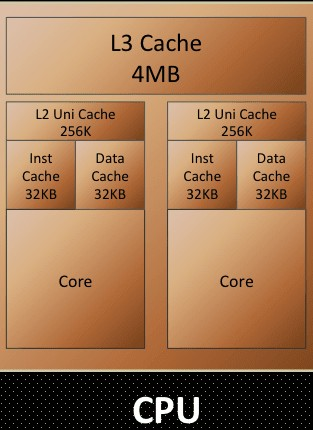
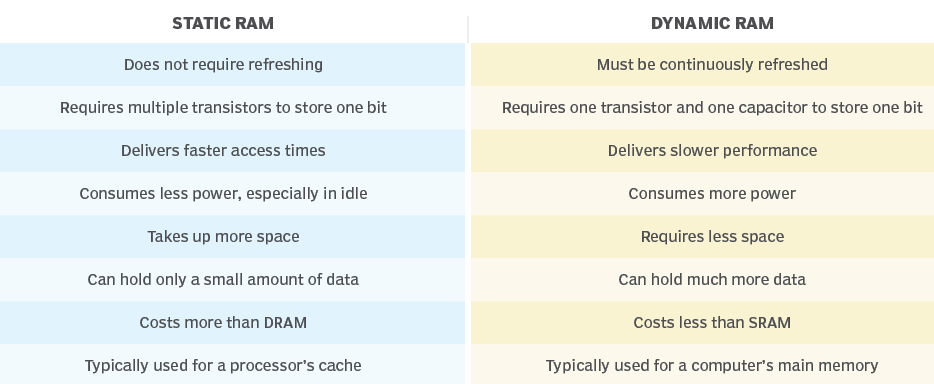
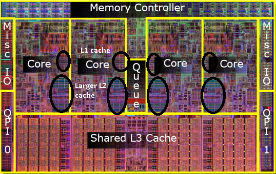
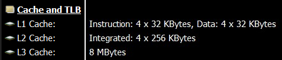

If you were looking to buy a laptop or smartphone, anything with a processor, you might've encountered the term cache accompanying the CPU specs. It'd be advertised as 8MB, 12MB, and so on. If you've wondered what is it? And why is it so important that the device maker is advertising its capacity? Well, you've stumbled onto the right article. Skip to "The Dining Table Analogy" below to get a layman's explanation of the CPU's working and this cache's role in it.
A CPU cache is a component of the system developed in the 1980s to deal with the growing disparity between CPU and RAM performances. The CPUs started to outpace the RAM's data-feeding capabilities. So, they envisioned a way to bridge that gap — an ultra-fast cache storage. This storage holds the data that the CPU would need in the program that it is processing (using various algorithms), guessing what it might need during the process cycle to ensure what is called a "Cache hit", before it goes back to the RAM, which results in a CPU stall as the CPU just wastes its cycle waiting for the data to be fetched back from the RAM.

Meanwhile, the CPU's control unit gets busy figuring out what next is to be loaded onto the Cache, replacing the data already on the Cache while minding not to brush off essential data. The Cache is in three levels, with the L1 Cache being the fastest and smallest, while the L3 being slowest and largest. All were residing on the CPU die mainly to prevent latency issues, as at the speeds at which these components operate, even the speed of electron transfer (which is close to the speed of light) too should be taken into consideration. The slightest of clock delays could jeopardise the CPU's functionality. L3 Cache is often shared between the multiple cores on the die simultaneously. In some designs, this level of Cache is wholly entirely omitted.
SRAM
Let's now talk about Cache itself. The Cache is what we call an SRAM (Static Random-access memory), this kind of memory is similar to DRAM, which constitutes your computer's primary memory. But the differences are as follows:

| Static RAM (SRAM) | Dynamic RAM (DRAM) |
|---|---|
| Does not require refreshing | Must be continuously refreshed |
| Requires multiple transistors to store one bit | Requires one transistor and one capacitor to store one bit |
| Delivers faster access times | Delivers slower performance |
| Consumes less power, especially in idle | Consumes more power |
| Takes up more space | Requires less space |
| Can hold only a small amount of data | Can hold much more data |
| Costs more than DRAM | Costs less than SRAM |
| Typically used for a processor's cache | Typically used for a computer's main memory |
As evident from the above infographic, SRAM needs six transistors instead of a single transistor and capacitor that a DRAM needs to store a bit of data, but it facilitates exceptionally higher random I/O performance. As a static form of RAM, it doesn't need the power to retain the data stored to it (as opposed to DRAM, which needs to get refreshed every 64ms / ~16 times every second), resulting in efficient idling. Modern CPUs are being designed as SoCs, with most CPU components fabbed onto the same die, of which these caches occupy a significant real estate. So, a larger size Cache comes at the cost of space on the die that the core components of the CPU could instead use.

This leaves the SoC makers with the only way to maximise the cache size on a processor being the use of advanced Fabrication technologies, design research, and using the least nanometer process of die printing (example: 5nM printing). As you might have realised already, all these are expensive for the CPU maker, so they innovate to ensure the Cache available on the SoC is utilised to its fullest extent. They optimise the prediction algorithm to ensure the most Cache hit, which means the CPU can find the data it needs in the Cache itself before reaching out to the Primary memory.

In the above screenshot you can observe the Cache layout on a i5-9300H. It's a quad-core processor hyperthreading to achieve 8 threads. Although the programs treat the threads as 8 processing nodes, the SoC is just 4 cores each acting as 2 cores, doing thread operations alternatively emulating a farce of 8 cores. Although this wouldn't make the chipset Octacore, Hyperthreading does result in performance boost as it utilises the idle time the CPU Core might have between I/O operations or "cache misses".
So, this processor has 4 L1 caches of 64KB and 4 L2 Caches of 256KB for the corresponding 4 cores of the chipset. An L3 Cache of 8MB is shared by the 4 cores.
The Dining Table Analogy
All of this gets really complicated really quick, so I suggest you my "Dining table analogy."
Here I like to visualize data handling in a computer as a person having a meal, where the person's stomach is the CPU trying to feed on as much data as possible with its insatiable thirst. The diner eats the food on the table one scoopful at a time.
- The kitchen is the Hard disk where all the data is stored, although its design (SSD v/s HDD) and its tidiness (read as Disk fragmentation) play a crucial part in determining its effectiveness and efficiency.
- A tireless butler stays by the table, ready to serve food on the table into the Plate for the Diner to consume next. He's the CPU's control unit.
- The table is Primary memory / RAM on the system.
- The Plate the Diner is served on is the Level-2 (L2) cache.
- The Diner's Head is the Level-1 (L1) Cache. Level-1 Cache comprises 2 parts: the data cache and the instruction cache.
- The Diner's visual recognition and understanding capability is the L1's instruction cache.
- His mouth is the L1's data cache.
So, now let's look back at our premise with the analogy and understand the events occurring here:
The food ready for consumption is brought to the table from the kitchen.
(Data related to the program/task is loaded into the RAM from the HDD)
The Butler serves the food onto the Plate ensuring all the items and dips as required by the diner are available on the plate itself.
(Memory controller adds required data to the L2 Cache, trying to maximise "Cache hit")
The Plate has food ready for consumption by the Diner.
(L2 Cache is cached up for the eminent program execution)
Diner recognises the type of food and takes the food bites.
(L1 cache's instruction cache and data cache are recognised, and data is filled accordingly)
He churns the food depending on the type of it, like whether it's a liquid or hard stuff, and swallows it for digestion.
(The CPU recognises the instructions of the code and handles the data in the Cache accordingly)
As soon as the mouth is empty, the Diner takes the next scoopful of food. As the food on the Plate starts to get empty, the Butler serves more food onto the Plate.
(As code in the L1 Cache gets processed, the next string of data and commands are loaded into their respective L1 caches. The control unit and memory controller decide what needs to be processed next and add them to the L2 Cache)
You can visualize the analogy for multi-core processors with the dining table filled with multiple diners (Processor cores). Here the Butler serves them the items from the table (RAM) simultaneously using a serving tray (L3 cache), ensuring every Diner's Plate is full.
This is a brief oversimplified overview that can help you get up to speed on how the magic of computing happens. This cycle happens billions of times a second, whether playing that casual game or reading this simple article. I consider this a pinnacle achievement of humanity that we've miniaturised this immaculate dance of this complexity scale into something that we don't even mind happening.
Conclusion
So, this is how the Cache on your system works and why it's available in the quantities it is. Going with the maximum Cache could look like the wisest choice. Still, a better choice would be going with the metrics that denote the Cache's performance and speed and benchmark scores of the specific SoC in the synthetic scenarios that emulate how you will use the device. What good is 32 Gigs of RAM on a Web surfer?